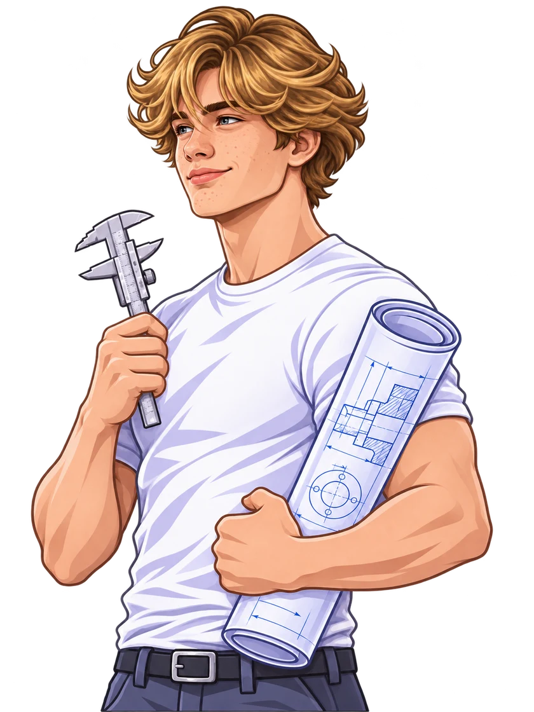
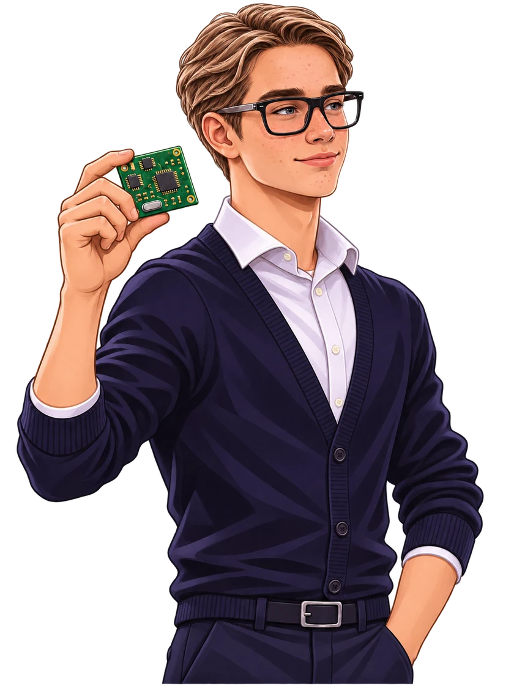
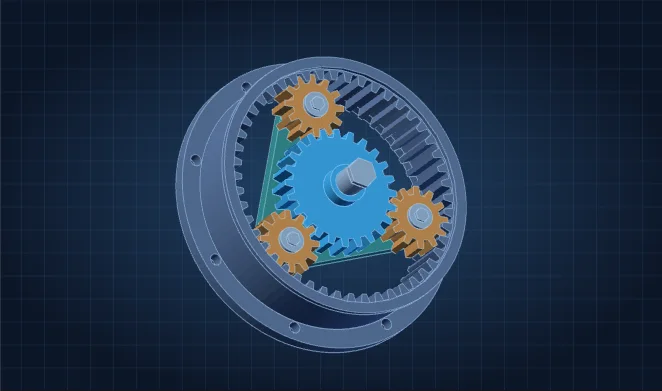

01 / РАЗДЕЛ КУРСА
Основы оформления чертежей
15 подтем · 32 схемы
Теория и построенияОткрыть раздел ↗



Нажми на деталь или выбери её в списке. Ползунок разделяет узел по слоям.
Перетаскивай модель для вращения. Shift + колесо или жест двумя пальцами меняет масштаб. С клавиатуры работают стрелки, + / − и Home.
Теория, схемы и 3D-модели к каждому разделу.
15 подтем · 32 схемы
13 подтем · 31 схема
14 подтем · 15 схем
9 подтем · 13 схем
9 подтем · 11 схем
15 подтем · 11 схем
17 подтем · 15 схем
Одна попытка в день. За верный ответ начисляется опыт.
Мой уровень и серия ↗Разбери сборку или разнеси проекции и сравни их по отдельности.
Разнеси корпус, прокладку, крышку, шайбы, гайки и шпильки. Крепёж вынесен в сторону, чтобы видеть его целиком.
Вид сверху расположен под главным, вид слева — справа от него. Сравни фаску, верхнюю ступень и отверстие на трёх видах.
Тест, карточки для повторения и чертёжная лаборатория.
Содержание разделов и исходные учебные пособия.